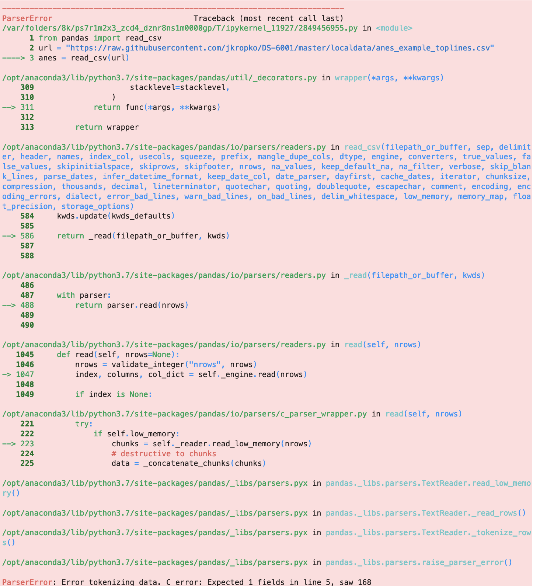
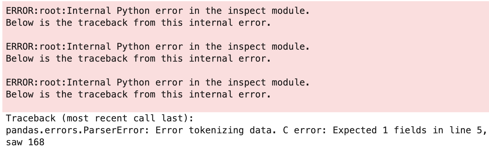

1. Getting Yourself Unstuck#
1.1. Introduction#
Modeling and analytics get the lion’s share of attention in the classroom in data science programs, but in the real world, data is almost never ready to be analyzed without a great deal of work to prepare the data first. This article in Forbes describes a survey of data scientists in which the respondents claim to spend nearly 80% of their time collecting and cleaning data.

The Anaconda State of Data Science report in 2022 finds that data scientists “spend about 37.75% of their time on data preparation and cleansing. Beyond preparing and cleaning data, interpreting results remains critical. Data visualization (12.99%) and demonstrating data’s value through reporting and presentation (16.20%) are essential steps toward making data actionable and providing answers to critical questions. Working with models through selection, training, and deployment takes about 26.44% of respondents’ time.”
Whatever the exact numbers, the fact remains that as a data scientist you will be spending a great deal of time collecting and preparing data in advance of an analysis, and a lot of time interpreting and communicating findings. The modeling itself will be a comparatively small part of your work.
And that’s why traditional academic training for data science can lead students to be underprepared. In many classroom settings, a professor will give the students a cleaned dataset and will task the students with running a predictive model using the data. But working with data that is ready for analysis from the outset is rare; in practice, before this kind of modeling can be done, data scientists have to identify the data they need, get access to the data, and find a way for the data to be loaded into a Python environment. That might mean loading data from files or APIs, or extracting data from webpages, or accessing a database. Then data scientists have to manipulate the data so that it is exactly in the format an analytic model expects, and that often involves mastery of SQL and the pandas package to manipulate rows and columns of a data matrix, merge and pivot data tables, handle missing data, recode and combine categorical values, along with a myriad of other tasks. And after finally getting results, yet more work is needed to communicate the output in a clear way that allows that audience to draw fast and accurate conclusions using data visualizations and interactive dashboards.
The phrase data pipeline refers to all of the steps needed to go from raw, messy, original data to data that are ready to explore and analyze to the products we share to communicate results to an external audience.
The goal of this book is to make the steps in the data pipeline other than modeling - acquiring, wrangling, and communicating data - easier, faster, less frustrating, and more enjoyable for you. The techniques we will discuss are not the only ways to accomplish a task, but they represent fast and straightforward ways to do the work using Python.
This book is divided into three parts beyond this introductory chapter:
- How do we acquire data?
From external files with flat, tabular structure (Chapter 2)
From JSONs, often from APIs (Chapters 3 and 4)
From web-scraping using
beautifulsoup(Chapter 5)From local or remote access to an SQL or NoSQL database (Chapters 6-7)
- How do we clean/wrangle/manipulate data to prepare the data to be analyzed?
With SQL queries (Chapter 7)
With
pandas, including merging and reshaping dataframes (Chapters 8-9)
- How do we explore data and communicate findings?
With summary and descriptive statistics tables (Chapter 10)
With static visualizations using
matplotlibandseaborn(Chapter 11)With interactive visualizations using
plotly(Chapter 12)
However, prior to launching into the data pipeline, we have to talk about the single most important skill for a data scientist: how to get yourself unstuck.
1.2. Being a Data Scientist Means Knowing How to Get Yourself Unstuck#
Most of you reading this book would describe yourselves as beginners with Python code and the practice of data science. Being a beginner is a wonderful thing. As a beginner, the rate at which you learn new skills is faster than it will be at any other point in your career. And the feeling of accomplishment you will feel by writing working code can and should be profound. But one drawback of being a beginner is the feeling of being judged or viewed as insufficient in comparison to more experienced coders who have much more of this programming language memorized. Imposter syndrome, a persistent feeling of doubt in one’s skills and the feeling of being a fraud, is especially common for students who are just starting out in a new field. And it’s only natural to look at people who type and execute code at furious speeds and to think of yourself as an imposter, especially when you keep getting errors when you try to execute your code.
But here’s the secret: problems, errors, and anomalies in your code are inevitable. And that’s true whether you are a beginner or a programmer with decades of experience. It would be accurate to describe a workday of a data scientist as moving from one error to the next to the next. It is simply the nature of using a big programming language like Python that includes so many user-written and open source extensions. So you will feel at times like all you do is generate errors with your code. This feeling is natural, and it is a universal feeling that all data scientists share regardless of their experience level. What sets experienced data scientists apart is their skill in using help resources fix bugs and to to get to the right answer, as quickly as possible.
As a student, you often have access to an instructor who can answer questions and help you work out the bugs in your code. But as a practitioner you might not have access to someone with the experience and time to help you with your code in a one-on-one way. Some proprietary software sells access to helplines and consulting, but open source projects like Python depend on the community of Python users to provide this support. The more popular an open source software package the bigger the community and the better the resources to help programmers solve problems. And it just so happens that Python is the most popular programming language in the world, and there are some incredible resources available to anyone working with Python. So the most important skill to master to become an advanced data programmer is participating in this community to quickly find answers to the problems that arise as you code.
In this chapter, we will discuss the various methods and resources at your disposal for finding help. Some of the methods provide quick assistance but focus on smaller issues, some methods are slower but help you solve harder problems, and some methods are only useful for certain situations. In general, it is best practice to start with quicker methods and to only move to slower methods if you can’t find a solution with a quicker one; so there is an order in which you should employ each resource. If you practice using these help methods and memorize the order in which to try using each one, you won’t have any trouble squashing all the bugs in your code.

1.3. The Places to Go For Help, In Order#
There are many resources available to you. I suggest using the following resources in a particular order:
Reading and understanding Python errors
Python documentation
Google
Stack Overflow
Large language models such as ChatGPT
Places to connect with the larger worldwide community of Python programmers, such as PySlackers and Python Discord, internet relay chat (IRC) rooms, and various Python mailing lists
Several of these resources are ones which are officially recognized and recommended by the Python Software Foundation, the nonprofit organization that maintains the official Python distribution. See https://www.python.org/community/ for more information about these resources.
Many new programmers use Google and Stack Overflow as their first options for getting help, and recently many people feel the pull to consult a ChatBot right away. I strongly suggest that you do not look to Google, Stack Overflow, or a ChatBot before trying to use the official Python built-in documentation or try to understand an error message you receive. The documentation and error messages aren’t as intuitive and easy to access as Google or ChatGPT, but the answers that the official documentation will provide are guaranteed to be correct and specific to the functions you are trying to use, if you know what those functions are. In contrast, for all of the strengths of Google, Stack Overflow, and ChatBots, they can be wrong or misleading because there is a lot of information out there that isn’t especially helpful. Defaulting to these resources as a first recourse will slow you down a great deal.
1.4. Method 1: Reading and Understanding Python Errors#
Usually, when you are stuck, it’s because you ran some code that resulted in an error. Reading and understanding the error is the single most important and useful way to get yourself unstuck. These errors are not aesthetically pleasing, and they are written in technical language, but the intention of these error messages is to tell you exactly what went wrong. Many new Python users skip reading the errors entirely, which is a shame because the error might indicate exactly the fastest way to solve the problem.
There are two reasons why people skip over reading the errors:
The error appears in a big pink box with pea green and cyan text inside of it. It’s pretty ugly.
The first several lines of code are reserved for a function’s traceback. The traceback is an attempt to isolate the particular line of code within a larger function that causes the error. However, the traceback is often very technical and not especially useful. After reading the first few lines of the traceback, many people give up on the entire error message.
But the useful part of the error message occurs at the bottom of the message. The traceback is useful when developing new functions and debugging original software. But the vast majority of the time, whenever you are using pre-programmed methods and functions, only the bottom of the error message matters.
For example, in chapter 2 we will discuss loading electonic data files. Many things can go wrong. One error we will contend with comes from the following code:
from pandas import read_csv
url = "https://raw.githubusercontent.com/jkropko/DS-6001/master/localdata/anes_example_toplines.csv"
anes = read_csv(url)
What this code is supposed to do is not important at the moment. It produces the following error output: 
None of this output helps me understand my mistake until I reach the final line that begins ParserError. With a little bit of experience, I can understand this error: it says that it expected the fifth row of the data file (“line 5”) to have one column (“Expected 1 field”), but instead it found 168 columns (“saw 168”). That’s useful - it tells me that the first four rows of the data file do not contain the data I need, probably because the data authors put text or citation information at the top of the file - but I had to wade through dozens of lines of technicality to arrive at the useful error message.
One way to make reading error messages easier is to turn off the traceback by loading the sys library and issuing the following command:
import sys
sys.tracebacklimit = 0
Now, when I use the same code, I get a different error output:

I can’t say that this error output is pretty or intuitive in and of itself, but relative to the previous error message this output has some nice properties. First, it is shorter (and there’s less pink). Second, and most importantly, the useful part of the error message appears much closer to the top of the output, so there’s less scrolling involved and the error takes up less space.
To turn the traceback back on, simply type:
sys.tracebacklimit = None
1.5. Method 2: Using the Built-in Python Documentation#
Packages, modules, classes and functions in Python have built-in documentation that you can display directly in the console or in the output of a notebook. These built-in documentations are called docstrings. The docstring, and not Google, should be the first place to look for help with specific, pre-built Python code as it conveys guidance directly from the code’s authors. In contrast, going to Google first often turns up blogs and posts in which another secondary user describes the code. ChatBots like ChatGPT are built in large part from scraping these secondary uses from various webpages. Either way, these approaches are more prone to misinterpretations and mistakes.
1.5.1. Using a Pop-Up Window in VS Code or a Console Window in JupyterLab#
In my experience working with new Python programmers, beginners are very reluctant to use the docstrings. That’s unfortunate because docstrings are fast and accurate ways to solve issues with using existing code. One reason for this reluctance is that calling up a docstring is unintuitive in VS Code and annoying in a Jupyter notebook.
In VS Code, make sure you have the Python extension installed. If you do, then when invoking a method or module, you can hover the mouse over the name of method or module and a pop-up window will appear showing the docstring. If the docstring is long, then you will be able to scroll down to see the entire docstring.
In JupyterLab, you can be work with two windows side by side: one for the notebook or script that contains your code, and one for viewing docstrings. Another reason new users don’t use docstrings is that the help documentation isn’t accessable until the packages that contain the relevant functions are loaded into the workspace. The following is a procedure you can use to make viewing docstrings easier with JupyterLab. With a little practice it can become a good habit that saves you a great deal of time in the long-run:
Use JupyterLab and open the notebook you are working on.
Run the entire notebook (or at least everything up to an error you are trying to fix).
Right click somewhere in the notebook and select “New Console for Notebook”.
Click on the tab for the new console window and drag it to the right so that it occupies the left-side of the screen.
The procedure listed above gives you a visible and separate place to view docstrings. It also loads the same kernel as the notebook you are working on, so that if you’ve imported pandas, for example, pandas is also loaded into the console so that you can call the docstring for any pandas module or function. Keeping this console open will help you more easily integrate calling and reading docstrings into your workflow.
1.5.2. How to Call Up and Read a Docstring#
There are many different kinds of code objects in Python that have attached docstrings:
A package itself, such as
pandasormatplotlib,A module: a named subset of the code within a package that focuses on a specific topic. One example is the
matplotlib.pyplotmodule which handles all of the functions to display the graphics constructed with other functions within thematplotlibpackage for data visualization,A function, either within the base Python code such as
print(), or within a package or module such aspandas.read_csv(),A Python variable that you, the user, has created. Some types of variables have associated attributes and methods. An attribute is another Python variable that can be extracted from the one you created. For example, if you create a data frame with the
pandaspackage and name itmydataframe, it has an attributemydataframe.columnsthat is a list of the names of the columns of your data frame. A method is a function that operates on this data frame. For example, typingmydataframe.corr()calculates the correlation between all pairs of columns in the data. (One easy way to tell the difference between attributes and methods is that attributes do not use parentheses, and methods must always use parentheses.)
VS Code displays doctrings for these objects automatically in a pop-up window when you hover your mouse over the object’s name.
To display the docstring in a console, notebook code cell, or terminal window, replace the word “helpme” with the name of the relevant package, module, function, or variable in one of the following:
help(helpme)displays the entire docstring for the package, module, function, or variable in question. Ifhelpmeis a user-defined variable, this method displays the attributes and methods available for the variable, if any.helpme?or?helpmedisplays an abbreviated docstring, as well as the signature (the complete function syntax, including all arguments and their default values). However, ifhelpmeis a user-defined variable, this method does not display the attributes and methods available for the variable.helpme??or??helpmeis the same ashelp(helpme)but shows the internal code for the function and methods if applicable and possible.
For example, consider the docstring for the print() function, which displays results to the notebook or console output. We can call:
help(print)
Help on built-in function print in module builtins:
print(*args, sep=' ', end='\n', file=None, flush=False)
Prints the values to a stream, or to sys.stdout by default.
sep
string inserted between values, default a space.
end
string appended after the last value, default a newline.
file
a file-like object (stream); defaults to the current sys.stdout.
flush
whether to forcibly flush the stream.
Or alternatively:
?print
And finally:
??print
In this case, ?print and ??print yield the same output because the internal code of print is C code, which Python calls but does not display.
Docstrings often have sections that convey particular information.
The header (only appears with
help(print)): tells us that theprintfunction exists in thebuiltinsmodule (the module that loads automatically when we launch Python)The signature: lists all of the parameters of a function. Each parameter in the signature is set equal to its default value. If the user doesn’t specify the parameter in the function all, it’s set to the default.
The short description: A one-or-two sentence summary of what the function does. For the
printfunction, this summary is “Prints the values to a stream, or to sys.stdout by default” which is technical-speak for prints to whatever the output medium happens to be. In a Jupyter notebook that means printing just below a cell of executable code.The parameters: this section is the most useful for learning how to use a function. The parameters section lists the parameters, in the order in which they appear in the signature of the function, along with information about each parameter. Each parameter is described in a sentence or two to explain what the parameter does. Sometimes the parameters may be noted as either required or optional in a call to the function, and the docstring might also list the type of each parameter: in this case, the
sepandendparameters are denoted as strings.
Other docstrings might include sections that describe:
Returns: describes what the output should look like and contain
Attributes and methods for a user-defined Python variable
See also: a list of related functions
Examples: Examples are meant to be run, not just looked at. Copy-and-paste the examples into your notebook or script, run the code. Then see if you can do more things with the given objects than the examples do.
1.6. Method 3: Using Google and Other Search Engines#
Many of us have a habit of going to Google first whenever we have a coding problem. Please make a concerted effort starting right now to break this habit. If you know the functions you need more information about, using the built-in docstrings first the best habit. The docstrings are what the code’s authors provide to guide users. If you know where to look within a docstring, you can find the correct answers to your questions quickly.
Google is a comparatively slow method for getting help. With open-source environments such as Python, there are many ways to do the same thing, and there are way too many presentations on the internet of any one topic to sift through efficiently. Many of the resources you find this way come from a field or a point of view that differs from your own, leading you to have to work hard to translate the language that explains the method. And some of the information is out of date or simply wrong.
Use Google or another search engine if
you don’t know the functions you need to do a task,
you don’t have a textbook or set of notes that you trust for guidance,
or if the built-in docsting doesn’t give you the information you need.
The format for Google search terms that usually works best for me is
python (a specific package if you know which one to use) (the function/method you want help with) (additional details)
Starting the search with “python” usually narrows the search to Python-specific documentation, message-boards, and blogs. Specifying the package is important when multiple packages can do some version of the same task: for example, if you are trying to use plotly to create a bar plot, you will have to sift through results that use alternative packages matplotlib and seaborn unless you state plotly directly. Typing the relevant function or task third narrows those results to more relevant posts. For example, suppose I try to solve the issue that led to the error above when using pd.read_csv(). I determined that the problem occurred because the first four rows of the data file are taken up by an unnecessary header placed there by the data authors. I would like to know how to skip these lines. If I turn to the docstring first by typing ?pd.read_csv, I see that there is a parameter skiprows with this description:
skiprows : list-like, int or callable, optional
Line numbers to skip (0-indexed) or number of lines to skip (int)
at the start of the file.
So I can just include skiprows=4 as a parameter within pd.read_csv(). But if I turn to Google, I can issue the following search:
python pd.read_csv how to skip rows at the top
Google will often take you to Stack Overflow (https://stackoverflow.com/) before other websites with coding information. In this case, the first hit is this Stack Overflow post which shows me the skiprows parameter, but tailors the advice to this particular individual’s use case which requires keeping the first row and skipping rows 2 through 11, something not relevant to me in this case. I can get to the right answer this way, but it is slower than going directly to the docstring.
Stack Overflow is by far the most widely used and informative repository of coding help and knowledge on the internet. But before we discuss Stack Overflow in more detail, there are other useful and credible websites that often appear when using a Google search to solve a coding problem:
More detailed documentation for specific Python modules, such as:
High-quality blogs:
Free content from tutorial websites with a lot more paid content:
There are also many, many more resources and new ones are created all the time. Find the resources you like best: going directly to the most credible links will save you a great deal of time in this effort to get yourself unstuck.
1.7. How to Avoid Toxicity in Online Communities#
The next options involve becoming a responsible, respectful member of the worldwide community of Python users. Open-source platforms like Python and R depend on a community of volunteers who develop and maintain the tools that we use. All of these people are doing volunteer work for the common good, and that’s a beautiful thing.
In addition to Python itself, Stack Overflow, Slack, Discord, the Freenode IRC, and mailing lists are online communities for Python users. But, like any online community, there’s the potential for a toxic culture to destroy everything.
What is a toxic culture? How do you know one when you see one?
Toxic cultures are more likely when
members are allowed to be anonymous (see Lapidot-Lefler and Barak 2011)
and members up-vote and down-vote and comment on each other’s contributions (see Massanari 2015).
A culture can be either actively or passively toxic. Actively toxic communities are easy to identify. They encourage and are characterized by overt sexism, racism, bigotry, and calls for violence or other aggression against individuals. Most of the toxicity you will encounter in online programming and data science communities is not actively, but passively toxic. Passive toxicity is characterized by gate-keeping: Subtle behaviors that discourage people with less experience, or with some social anxiety, from participating.
Stack overflow, IRCs, and mailing lists are notorious for passive toxic behavior. Passive toxicity is a bigger problem for us than active toxicity because actively toxic behavior is usually explicitly banned by codes of conduct, and individuals are often unaware of when they are acting in a passively toxic way.
Examples of passive toxic behavior:
Condescending language: often people who are trying to earnestly answer a question unthinkingly use language that makes someone feel dumb for asking the question. If you are answering a question on an online programming forum, avoid using words such as “obviously”, “clearly”, “actually”, “just”, or “that should be easy”.
Shaming: making an implication, even a very slight one, on someone’s intelligence or work ethic instead of giving people the benefit of assuming they’ve tried other avenues before posting. Some subtle examples include saying “google it”, or “read the manual”, implying that the questioner must not have tried these methods first. Sometimes people shame others more aggressively on these forums by saying things like “Learn to debug your own code” and “If you don’t get this, you have no business being a data scientist”, but hopefully that’s becoming more rare.
Downvotes without explanation: this can be both confusing and very upsetting to anyone, especially to people with less experience.
Virtue signaling: implying that people are superior/inferior because of the language, software, or methods they use. For example: “Real programmers don’t use for loops”, “You still use SAS?”, and so many memes:

Source: 'Statswars' by Kieran Healy
Authoritarianism: Abusing people for failing to follow all of a community’s rules for asking questions. For example, a comment that entirely ignores the content of the question but comments “all questions must provide an example,” or editing a user’s post to remove where they wrote “Hi everyone” and “thanks.”
Overzealous curation: Being very quick to tag a question as a “duplicate” without checking to see nuanced ways in which the question comes from a new situation.
The result of passive toxicity is that many potential community members choose not to participate in the community because their initial experiences made them feel ashamed, confused, or belittled. In addition, other potential new members observe these negative interactions involving other members, and choose to disengage.
Passive toxicity shrinks the community and makes it more homogeneous. Across society, small, homogeneous communities are much more likely to exclude or discriminate against people based on sex, race, class, language and other factors. And that leads to many ethical problems.
Remember, most of time when someone is exhibiting passively toxic behavior on a forum, they are well-intentioned but are not thinking about how their responses will be perceived. Very few people deliberately contribute to a toxic online culture, but many people do contribute by failing to empathize with the questioner and by not choosing words carefully.
Please keep the behaviors described here in mind when you engage in online communities, and avoid them. Think about your words and place yourself in the position of the original poster before submitting a response, and make the edits that you think would lead to a better online interaction. Don’t be afraid to call out other people who behave in these ways. And if you are yourself the person who posts, be aware that these behaviors still happen much too frequently, but know that despite this, most people on these forums mean well.
1.8. Method 4: Stack Overflow#
Stack Overflow is the most popular and most useful website for help with programming of all kinds. Google searching a Python problem will usually lead to a Stack Overflow post on the same issue. Python is now the second most frequently used tag for posts on Stack Overflow, and shown in this video:
from IPython.display import IFrame
IFrame(src="https://www.youtube.com/embed/Hu-AhRwrPlg?si=uPkHIQSaPcgh0nCJ", width="560", height="315")
Finding a Stack Overflow post that’s relevant to your problem can give you both the code and underlying intuition to solve your problem. Or maybe not! Small differences in the situation can make the solution irrelevant to you. Be cautious and don’t treat a Stack Overflow post as automatically a definitive answer.
1.8.1. How Stack Overflow Works#
Someone asks a question
Other people comment on and provide answers to the question
The person who asked the question replies to the comments, and can choose an answer to mark as “accepted”.
People with reputation scores higher than 15 can upvote or downvote questions and answers.
Reputation points are awarded for asking questions or giving answers that other people upvote, or for having an answer accepted. Points are taken away for downvotes or spam or offensive posts.
Going for reputation is an entirely optional activity. If you don’t want to worry about it, don’t.
1.8.2. Asking a Question on Stack Overflow#
Okay, so you’re stuck. You’ve combed through the Python documentation, Google, and old Stack Overflow posts, but you haven’t found a solution. It’s time to consider writing a new question on Stack Overflow.

Source: '10 Ways to Learn WordPress Hooks', RachieVee: Rachel's Blog.
This can be frightening. A lot of the time, people answering questions on Stack Overflow can be, well … huge assholes that cause real suffering. You might choose to avoid posting to Stack Overflow, so as not to support a website that has harbored abuse. That’s completely fair. If you do post to Stack Overflow, you are likely to get some very useful responses if you follow some guidelines. There’s a strategy for getting good responses. You are more likely to get a good response if you follow these steps:
Search Stack Overflow and Google to see if the question has already been answered. Commenters dislike if the same question is asked repeatedly. This poor guy got roasted for posing a “duplicate” question. (An aside: Why? It’s not like Stack Overflow is running out of space on their website. There’s an idea that Stack Overflow should be a central repository of knowledge. That means there should be one canonical answer to one question. But people often take this much too far. There are kinder ways to point to an existing answer.) So spend a significant amount of time digging through the internet. If there’s something similar, but not quite what you need, you can say so in your post.
Write a good title for your post. A good title is specific about the problem, and also succinct:
Bad: Problem with matplotlib (not specific)
Also Bad: How do I place the labels of cars in a scatterplot of the weight and miles per gallon of cars onto the points in the scatterplot using matplotlob 3.3.1 on Python 3.7.4 on Mac OSX 10.14.5? (not succinct)
Good: How to place labels on top of points in a matplotlib scatterplot?
Start the post with a paragraph describing the problem in more detail. Some good things to include in this paragraph:
The context of the problem: how did you come across the problem? Describe the overall goal, not the just the buggy step.
What you’ve already tried to solve the problem, and what happened.
What is the expected output? What do you see instead?
You can write the version of Python you are using, the version of the modules, and the operating system on your computer, in case the problem turns out to be specific to an old version of one of those things.
If possible, include code that reproduces the problem. The code should not simply be the code in your script that isn’t working. It needs to be able to work on someone else’s computer. That means the code should not depend on any specific data files, and should not contain file addresses that refer to a location on your computer. If possible, only use modules that are easy to get. If the code needs to run on data, can you use something pre-loaded in Python that everyone can access? (There are example datasets included with
scikit-learn, for example.) Make the code as short and stripped down as possible while still producing the behavior or error that needs to be fixed, and use comments to help people understand the code more quickly.
A few additional things to keep in mind:
Be courteous and respectful. Respond to and thank everyone who comments.
Post a follow-up once the problem is solved so that people who come across this page in the future with the same problem know the solution.
Don’t ask people to write code for you. It’s better to request help with code your provide.
Don’t claim you found a bug in Python or in a module. It’s a bit rude to the people who programmed the code (who don’t get paid).
Don’t ask about homework problems. (Here’s an example of someone getting called out on this.)
1.9. Method 5: Using a Large-Language Model (a ChatBot) to Generate and Debug Code#
Since the release of Open AI’s ChatGPT in March 2023, generative AI and especially chatbots have occupied a great deal of the attention of data scientists in industry and academia. There is far too much to describe about these chatbots in terms of their construction, use, and ethics to fit as a concise discussion in a text like this one. But the main idea you should keep in mind about chatbots is that they are both a necessary part of a data scientist’s toolkit, and that they are not any more intelligent than what can be found with a careful search on Google or Stack Overflow. Chatbots are trained on massive amounts of data, largely scrapped from the internet, and with respect to coding the major sources of data are Stack Overflow and GitHub. It’s useful to think of a chatbot as a more efficient way to sift through the information that already exists on those websites.
Schools are grappling with the question of whether using a chatbot constitutes cheating. But professional software engineering and data science has largely adopted the view that chatbots are fair to use. So data science teachers do their students a disservice by banning use of LLMs.
Instead, students and teachers need to work together to solve the basic riddle at the heart of bringing LLMs into the classroom. The puzzle is characterized as follows:
For a data scientist who is experienced and skilled with code, LLMs when used properly help speed up work a great deal.
LLMs make mistakes at rates which are unacceptable for professional work, and need to be supervised.
The wide and free availability of LLMs make it harder for a student to achieve a baseline mastery of the basics needed to use the LLM effectively and assess its output accurately. (Why struggle through homework that the LLM can complete in seconds?)
As a student, you have to understand the difference between using an LLM as an assistant and using the LLM as a crutch. As the industry evolves to incorporate more and more AI tools, hiring processes will focus on determining which candidates have mastered the basic skills and as such are in the best position to get the most out of use of AI. As teachers, we need to be up front with you about these goals, and in light of them, we also need to show you the best ways to use a LLM in your workflow.
There is an approach to using chatbots for coding effectively, and knowing the right way to prompt a chatbot to solve coding problems is itself an important skill. So if you are going to use a chatbot, use it correctly. The following discussion outlines some ways to access a chatbot as part of your own workflow and some strategies for writing prompts that can generate the code you need or debug code.
1.9.1. Using an LLM for Coding: Autocompletion and Context-Aware Prompting#
There are two chatbots at the moment that integrate directly into VS Code and can see the variables you’ve defined in a Python environment. This specific functionality, above and beyond the relative capabilities of any OpenAI, Meta, or Microsoft LLM, is essential for a fast data science workflow.
These two chatbots are GitHub CoPilot and Codeium (not to be confused with Codium which is a different gen AI). GitHub CoPilot costs $10/month to use but offers free access to students after filling out an application. Codeium offers free-tier access to everyone that covers most of what you would need in any data science workflow. After researching the reviews for both, I found that Codeium seems like a higher quality option than GitHub Copilot at the moment.
To install and start using Codeium go to https://codeium.com/download and select Visual Studio Code. You will need to register for a free account with Codeium. Once you’ve signed up, you will see a page with a “Quick Install” button you should click on. This link opens in VS Code the extension installer page for Codeium. Click on “Install.” During the installation process your browser will open the Codeium website and prompt you to log-in if you are not currently logged in.
Once the Codeium extension is installed, there are three ways to use it: autocompletion, in-line prompting, and prompting an external chat.
Autocompletion should be enabled automatically once the Codeium extension is installed and enabled. As you type code in a script or a notebook, autocomplete will suggest ways to complete lines of code you start writing. For example, if you type import pandas autocomplete will place the phrase as pd in grey. You can accept the autocompleted code by pushing tab. In some cases the autocomplete may add many additional lines of code: for example, if you write a function for a common task that the model would have seen frequently in the training data, autocomplete may infer what you want to do from the name you choose for your function, which again you can accept by pushing tab. With functions you write, if you hover over the name of the function, you also can click on an open to automatically generate a docstring for the function. Autocomplete is a huge time saver if you already know the code you would need to write, but be judicious as autocomplete can misunderstand what you need to do, can use deprecated code, and can make other mistakes.
In-line prompting provides the context of your code to the LLM, informing the LLM about all variables previously defined, such as dataframes and the columns contained within them. In-line prompting is much faster than using an external chat because you don’t have to define these to the LLM within your prompt. For example, if you’ve defined a pandas dataframe for daily trading data from different stocks and named it trading with columns stock, date, and closing_value, you can use an in-line prompt to ask Codeium to “*Collapse the trading dataframe to one row per stock and month with the mean of closing_value for each stock in each month.” To submit an in-line prompt, place the cursor to the spot in your code you are focused on and press Command + I on your keyboard. You will be able to type your prompt in the text box at the top of the VS Code screen. The response will generate candidate code with the following format:
/************* ✨ Codeium Command 🌟 *************/
LLM generated code will appear here
/****** a89ad9d6-61cc-4ee2-8af7-25ed1ed38927 *******/
To accept and incorporate this code, you can just delete the commented lines that mark the Codeium generated code. Like autocompletion, the in-line prompting capability generates code, but not textual explainations of the code. If you want to chat in text, the better approach is to prompt to an external chat, which is discussed in the next section.
1.9.2. Using an LLM for Error Debugging and Code Explanations: Prompting an External Chat#
The most common way that people are interacting with a chatbot currently is the OpenAI website for chatting with ChatGPT: https://chat.openai.com/, and Codeium builds a similar chat into VS Code to go along with its autocomplete and in-line prompting functionality that can be accessed via the {...} icon in the left-hand toolbar. Unlike in-line prompting, using Codium in this way does not make it aware of the context of your code, but it does allow for a text-based interaction or conversation with the LLM, which is better suited for debugging errors or explaining code. The primary difference between ChatGPT and Codeium used in this way is that Codeium is finetuned to respond to prompts about code. While ChatGPT might be a more robust LLM in general, the finetuned Codeium model will likely be better at coding questions (and worse at all other questions).
No matter which LLM you use, using external chatbots to help you code is not a fast method for generating code. Generally, getting a useful result from a chatbot requires having a “conversation” with the chatbot to narrow in on the desired product. That also involves taking time to study and run the code that the chatbot produces to see what is correct and what is still lacking. The time needed to build to a final output and assess it step by step increases with the amount of work you ask the chatbot to do.
However, these chatbots are very efficient at identifying errors and helping to debug code, and they are able to break down code and explain it line by line.
Depending on your use case, using the chatbot in this way might be as simple as copying a few lines of code and pasting them into a prompt, along with the instruction to explain or debug the code. If you are trying to resolve an error, you might also copy the message that appears at the bottom of Python’s error message along with the code. For debugging, the key is to isolate the code that generates the error and to supply the error message. That said, the chatbot’s interpretation may be right or wrong for your specific case, the same as any post on Stack Overflow. The purpose of using a chatbot to work through errors is not to fix the code, exactly, but rather to shed some light on what is causing the error so that you can fix it yourself.
If you are trying to use an external chatbot for generating new code for any reason, it is most effective to remember these general principles: Data, Packages, Chunking, Streamline, Knowledge (or to remember, “Don’t play chess with Stephen King”).
Data: Provide “just enough” data within the prompt to get the chatbot to write code that is more specific to the data at hand. That often means copy-and-pasting just a few rows in CSV or JSON format, and including it in the prompt while directly writing how you are providing data.
Packages: Directly ask for specific coding languages and packages if you know the right ones to use.
Chunking: Ask for elaboration and chunk the task. Chatbots like ChatGPT work in reference to previous queries, so it is appropriate to issue a second prompt that references the first to add complexity to the task.
Streamline: Chatbots are not guaranteed to generate efficient code in terms of length, even if the code works. Sometimes one line of code using a method in a package like
pandasaccomplishes what 50 lines of code can do in base python. Using the complicated version of the code makes your work harder for you and your collaborators to understand. You can issue a follow-up prompt to a chatbot to ask for code that accomplishes the same task with in a more streamlined way: “Provide code that works the same as the previous response but uses fewer lines.”Knowledge: The main challenge, however, is knowing what to ask for and understanding whether or not the provided code genuinely accomplishes the task. If you aren’t specific with how you ask the question and don’t supply data, the chatbot will usually provide code that looks sort-of right but can’t be run to confirm whether it works as needed, and if you aren’t sure what the output ought to look like it will be impossible to know whether the code is correct or not.
To reiterate, in-line prompting avoids much of this work as the LLM is automatically aware of the data, languages, and packages employed, the in-line placement of the cursor encourages you to ask for smaller tasks that fit within the flow of the script, and the finetuned LLM helps to generate better quality code.
1.10. Method 6: Interacting with the Global Community of Python Users#
1.10.1. Python Slack and Discord#
Slack and Discord are both platforms for groups of people to chat with each other, post to shared message boards for specific topics, share files, and hold meetings.
The main slack page for the global community of Python users is Pyslackers: https://pyslackers.com/web. To join, just go to the URL and click “join the community”. The main discussion happens on #python_, but there are many other useful channels including #data_science and #job_advice. This method is especially worthwhile if you already are used to using slack for work or for personal networking.
Python Discord (https://www.pythondiscord.com/) is similar to PySlackers but seems to be more focused on organizing shared Python projects and posting the code on GitHub. To join, click the “join us” link in the upper-right corner of their homepage.
One thing that helped me use Slack and Discord much more consistently is downloading the desktop app for Slack (https://slack.com/downloads) and for Discord (https://discord.com/download), and always leaving the apps open on my local computer so that I see messages right away when they are sent to me.
1.10.2. Python Mailing Lists and Newsgroups#
Usenet is a distributed discussion system (which means it has no central server). It was invented in 1979, and is still in use today. The Python Usenet message boards are at https://mail.python.org/archives/?sort=popular. The comp.lang.python board is for general discussions and questions about Python.
The tutor mailing list (https://mail.python.org/mailman/listinfo/tutor) is for users who want to ask questions about learning computer programming with Python.
If you have a question for the Python core development team, send an email to help@python.org. The team is pretty busy, so be sure to check other resources and lists for an answer first.